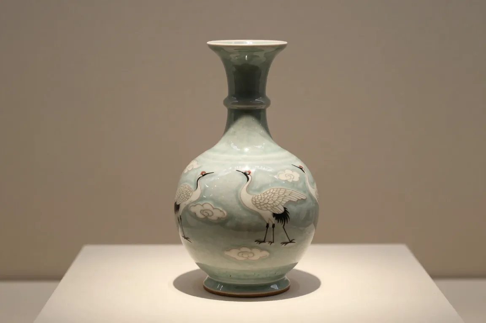

Koreansk celadon fra Goryeo-riket. En tynn, klar grågrønn glasur dekker et fint gods, og pottemakerne legger hvit og sort slipp inn i innrissede linjer for å lage et mønster under glasuren.

Kjerneidé
En potte er en klar grønn linse over en tegning: glasuren er nesten gjennomsiktig, og den innlagte slipplinjen skinner gjennom som blekk i vann.
Designprinsipper
Brenn et fint grått steingods til en tynn, gjennomskinnelig glasur i grønnblått, omtrent 0,3 til 0,5 mm tykk.
Skjær mønsteret inn i den lærharde leiren med et fint verktøy.
Fyll snittene med hvit og sort slipp, og skrap så flaten ren (sanggam-innlegg).
Bruk traner, skyer, piler, krysantemum og lotus som hovedmotiver.
Form godset som en grasiøs maebyeong med høy skulder, eller en mugge i form av en gresskarflaske.
Form et lokk eller en tut som en løve, en and eller en skilpaddedrage, for de fineste stykkene.
Brenn ved 1200 til 1250 °C i reduksjon på små leirstøtter.
Antimønstre
En tykk dekkende glasur som skjuler innlegget
Mønster malt på glasurens overflate
En brun eller gul glasur fra svak reduksjon
En tung form med tykke vegger og ingen kurve
Enkle geometriske border som erstatter de naturlige motivene